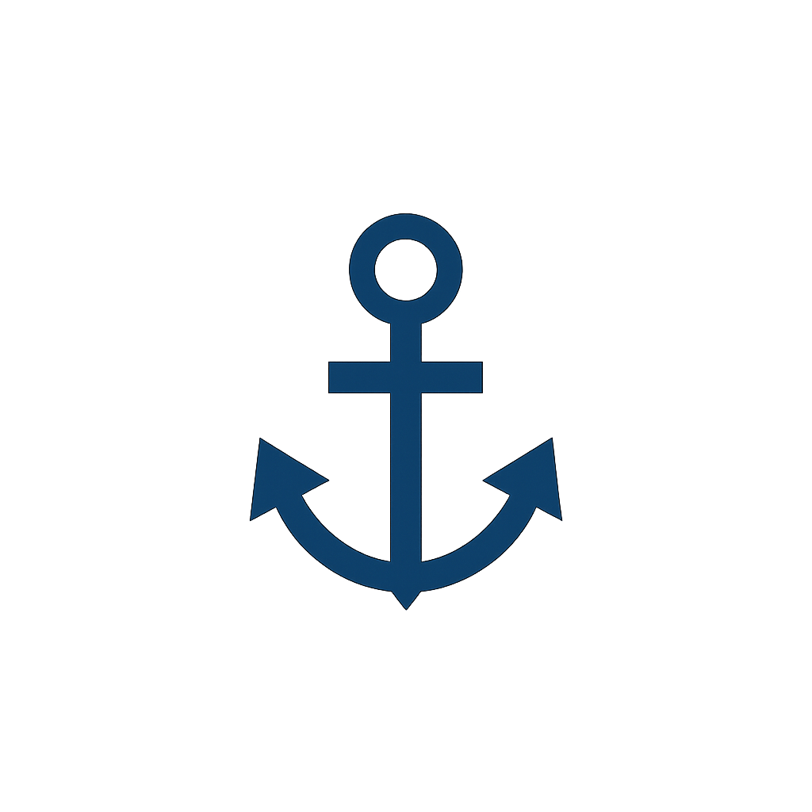
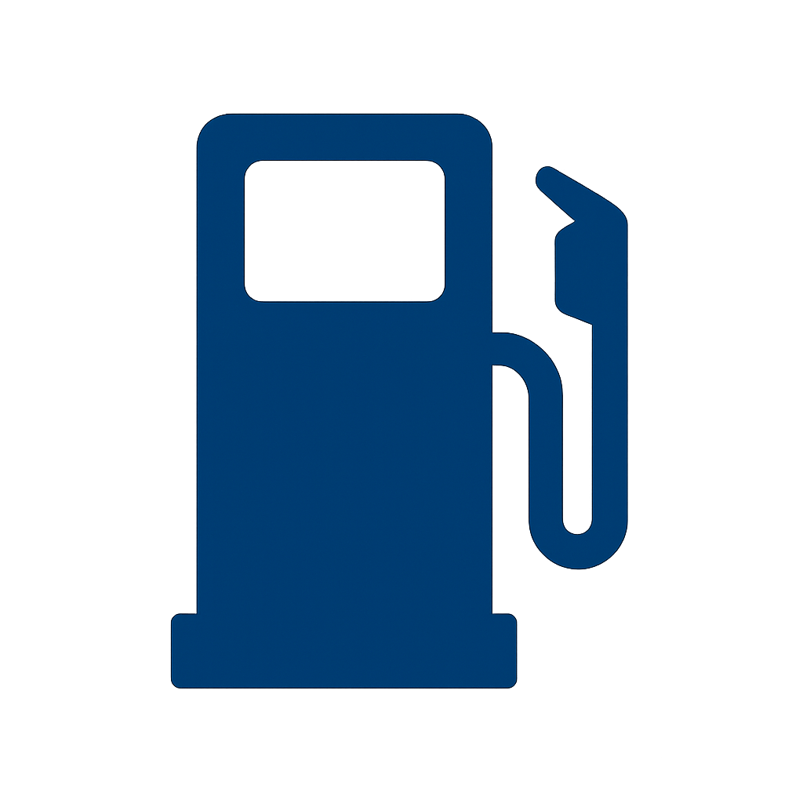
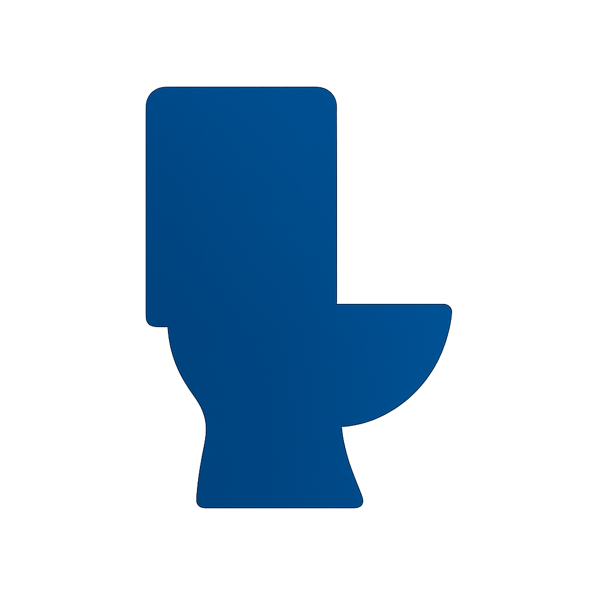
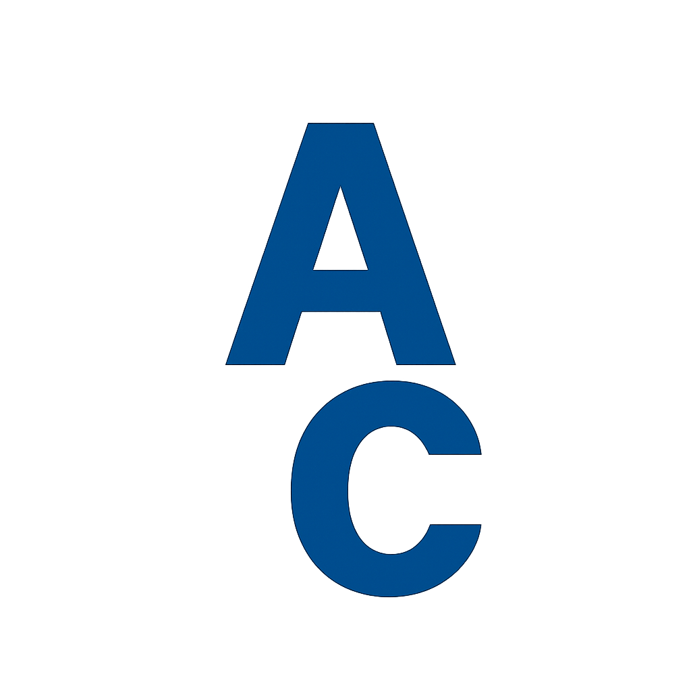

Today is:
EDT:
Gulf & Okeechobee Bridge Openings
North Bridges (Call Ch9):
Select North Bridge
MM34.3 Boca Grande Swing
MM43.5 (37.8 Nmi)Manasota Key (Tom Adams)
MM49.9 (43.4 Nmi)Manasota
MM54.9 (47.7 Nmi)Tamiami Trail (Circus)
MM56.6 (49.2 Nmi)Venice Avenue
MM56.9 (49.4 Nmi)Hatchett Creek
MM59.3 (51.5 Nmi)Albee Road (Casey Key)
MM63 (54.7 Nmi)Blackburn Point
MM68.6 (59.6 Nmi)Stickney Point (SR 72)
MM71.6 (62.2 Nmi)Siesta Drive
MM34.3 (29.8 Nmi)Ringling Causeway (SR 789) FIXED
Longboat Pass (SR 789) (to Gulf)
MM87.4 (75.9 Nmi)Cortez (SR 684)
MM89.2 (77.5 Nmi)Anna Maria Island
MM110.5 (96.0 Nmi)Sunshine Skyway (Meisner)
MM113 (98.2 Nmi)Pinellas Bayway Structure 'E' (SR 679)
MM114 (99.1 Nmi)Pinellas Bayway 'C' FIXED
MM117.7 (102.3 Nmi)Corey Causeway (SR 693)
MM118.9 (103.3 Nmi)Treasure Island Causeway
Johns Pass (to Gulf)
MM122.8 (106.7 Nmi)Welch Causeway (SR 699)
MM126 (109.5 Nmi)Park Boulevard (SR 248)
MM129.3 (112.4 Nmi)Indian Rocks Beach (CR 694)
MM131.8 (114.5 Nmi)Belleair Causeway
Clearwater Pass (SR183) (to Gulf)
MM136 (118.2 Nmi)Clearwater Memorial Causeway (SR 60)
MM141.9 (123.3 Nmi)Dunedin-Honeymoon Island
South Bridges (Call Ch9):
Select South Bridge)
SR 865 Matanzas Pass (fixed)
Sanibel Causeway 'A' Span (fixed)
Big Carlos Pass (SR 865)
Matlacha Pass (SR 78)
Okeechobee Bridges(Call Ch9) Locks (on Ch13):
Select Okeechobee Bridge/Lock
MM142 Cape Coral
MM138.6 Mid Point Memorial
MM135.1 Caloosahatchee
MM134.4 Thomas Edison
MM129.9 SCL RxR Bascule
MM128.9 I-75
MM126.3 Route 31/W. Piggott Bascule
MM121.4 Franklin Lock
MM116 Alva Bascule
MM108.2 Fort Denaud Swing
MM103 La Belle Bascule
MM93.5 Ortona Lock
MM78.0 Moore Haven Lock
MM78.4 Moore Haven (US 27)Highway
MM78.3 Seaboard System RxR
MM75.5 Clewiston Lock
MM60.7 Torry Island Swing (Route #2)
MM39.1 Port Mayaca Lock
MM38.8 US 98/441 Bridge
MM38 Florida East Coast RxR
MM28.2 Seaboard System RxR
MM28.1 Indiantown (SR 710)
MM17.1 SR 76A
MM15.1 St. Lucie Lock
MM14.5 Florida Turnpike
MM14.0 I-95 Twin
MM10.9 Southwest Martin Highway
MM9.5 Palm City (SR 714)
MM7.5 Old Roosevelt (Dixie Highway)
MM7.4 Florida East Coast Railroad Bridge, Stuart
MM7.3 New Roosevelt (US1)
MM3.4 Evans Crary

Waterway Guide
Anchorages

Fuel Prices

Pumpouts

Active Captain
Waterway Guide